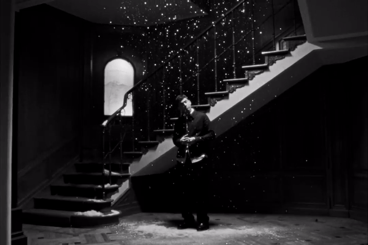
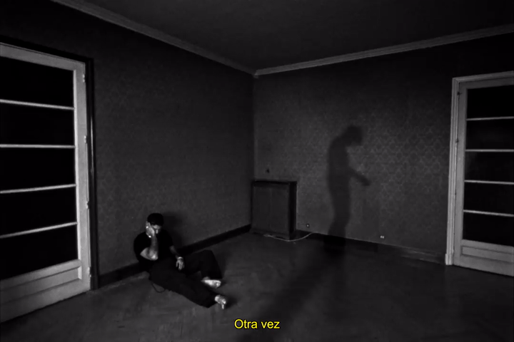
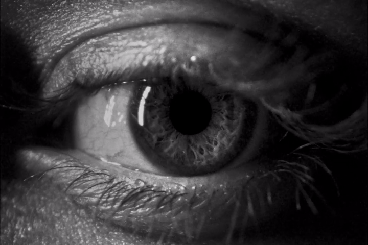

UNA CARRERA ESTABLECIDA.
UN AÑO DESAPARECIDO.
UNA TRANSICIÓN PERSONAL.
UN STATEMENT ALBUM.
La Madrugá es el comeback album de Delaossa tras un proceso de autodescubrimiento, reencuentro y sanación. 12 meses de transformación personal que necesitan ser contados.
YO, QUE NACÍ EN MÁLAGA [TEASER]
Un teaser que muestra la etapa oscura del artista, las dudas y el dolor hasta alcanzar el punto de inflexión.



NUEVA SEASON [1ST SINGLE]
Un music video donde se muestra la nueva vida de Dani y el proceso hasta llegar a ella.


STILL LUVIN FT. QUEVEDO [FOCUS TRACK]
Un music video donde vemos un viaje de amigos que es un ejercicio de sanación.